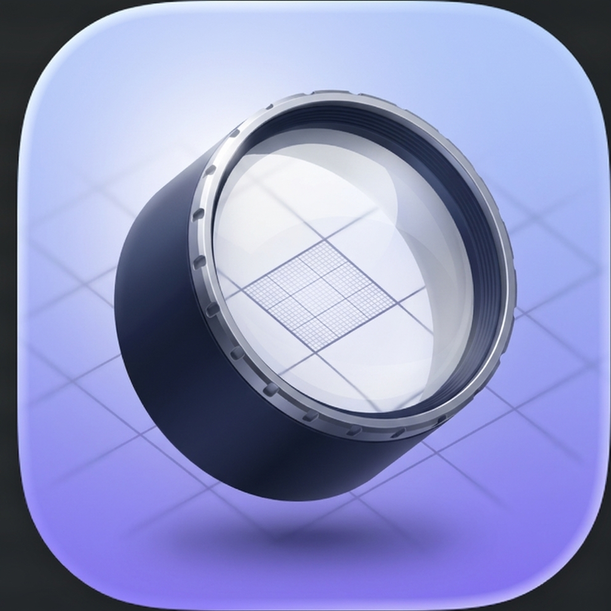
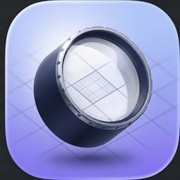
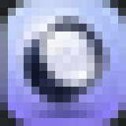
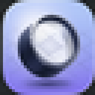
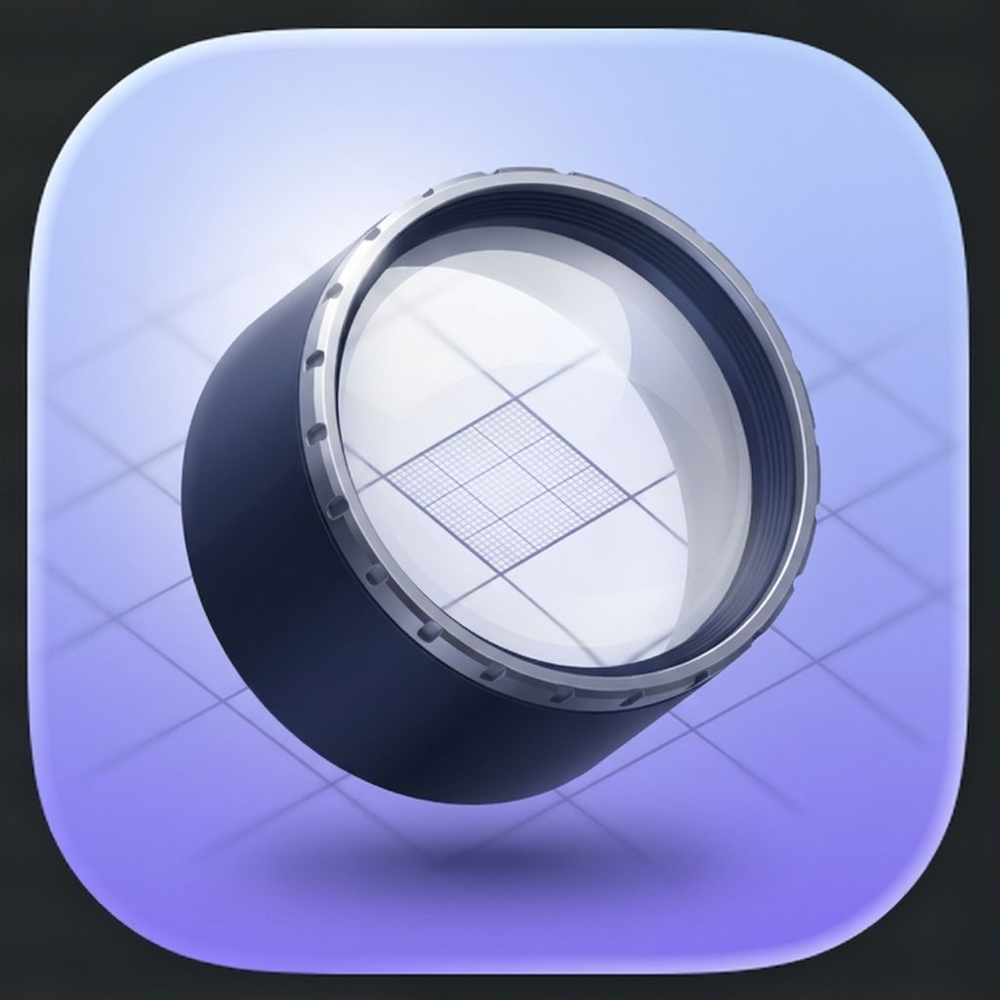
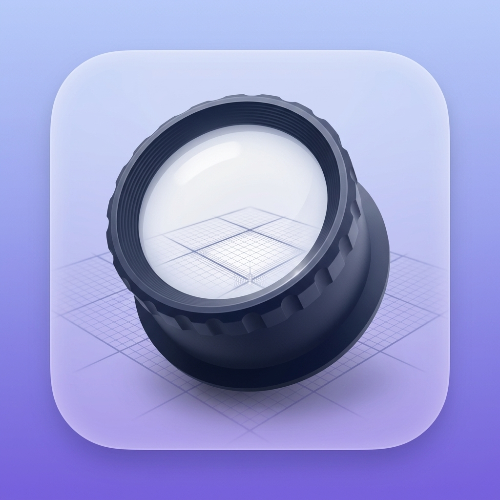

1024 @ 256
256 → 12832 → 16
Icon audit · Engine C (Gemini 3 Pro Image, 2 takes, corpus-referenced) · shipped take: bmw-raster-ee8831-2

1024 @ 256
256 → 128
16px
32px
take 2 — SHIPPED
take 1 — rejected| Take | Read | Verdict |
|---|---|---|
| take 2 | Tile is the subject. The magnified cell visibly resolves into fine grid while the surrounding grid stays soft, so the concept reads. Milled rim carries the seal. Navy barrel, silver rim, near-white lens, key light upper-left. | Shipped |
| take 1 | Rendered the tile on a violet ground rather than as one; the loupe overflows and clips at the tile edge; barrel near-black so it collapses to a dark blob small; the magnified cell is a faint scribble rather than resolved detail. | Rejected |
| # | Check | Result |
|---|---|---|
| 1 | Silhouette names the subject | Pass — a lens, appropriate to witnessing |
| 2 | Survives 16px | Pass — lens-on-tile holds; grid detail drops out as expected |
| 3 | One light model | Pass — key upper-left, single soft contact shadow |
| 4 | ≤2 hue families | Pass — periwinkle/violet ground, navy/silver object |
| 5 | Optical centring | Warn — sits slightly low-right; the barrel grazes the lower edge |
| 6 | Material depth | Pass — volumetric barrel, translucent lens, rim light |
| 7 | Era grammar (Tahoe gel-glass) | Pass — sampled from corpus apple-04 / apple-01 |
| 8 | Signature move present | Pass — sharp-inside-soft-outside is the whole idea |
| 9 | No stock category glyph | Pass — a loupe, not a magnifier-with-handle |
| 10 | Layer plan legible | Warn — raster, so not layered; no hand-authored SVG master |
| 11 | No text in the mark | Pass |
| 12 | Consistent silhouette with siblings | Fail — not yet cut to the marketplace squircle path |
squircle-path.txt, so its outer shape does
not match its siblings in this marketplace, which reads as an error in a lineup.
Composition sits slightly low-right. Score: 9/12, below the 10/12 bar.